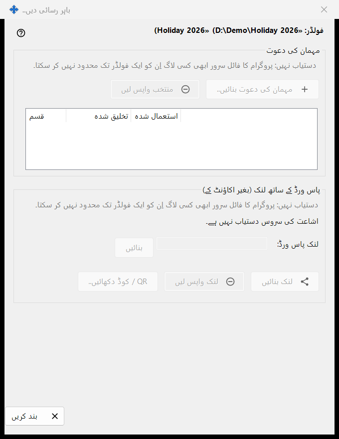
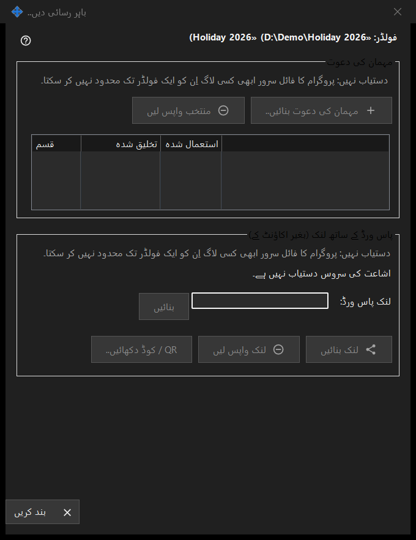

باہر رسائی دیں
یہ کس مقصد کے لیے ہے
ایک شیئر کیے گئے فولڈر تک ان لوگوں کی رسائی کو کنٹرول کرتا ہے جو آپ کی اپنی ڈیوائسز سے باہر ہیں: مہمان کی دعوت، یا پاس ورڈ والا لنک جس کے لیے اکاؤنٹ درکار نہیں۔ یہ منتخب فولڈر کے لیے Share Manager کی مرکزی ونڈو کے باہر رسائی دیں.. بٹن سے کھلتا ہے۔ اس ورژن میں نئی رسائی بنانے والے کنٹرول بند ہیں اور ونڈو وجہ دکھاتی ہے، البتہ پہلے سے موجود رسائی واپس لی جا سکتی ہے۔


اس ترتیب میں
- فولڈر کے نام اور راستے والی ہیڈر لائن پڑھیں۔
- ہر گروپ میں وجہ والی لائن پڑھیں؛ جب تک وہ نظر آئے، کچھ نیا نہیں بنایا جا سکتا۔
- رسائی ہٹانے کے لیے ایک دعوت منتخب کریں اور منتخب واپس لیں دبائیں، یا لنک واپس لیں دبائیں۔
- باہر نکلنے کے لیے بند کریں (Escape) دبائیں۔
عناصر
فولڈر اور حالت
گاڑھی لائن فولڈر اور اس کے راستے کا نام بتاتی ہے۔ نیچے کی حالت کی لائن آخری نتیجہ بتاتی ہے۔ جب اشاعت کی سروس نہ چل رہی ہو تو ونڈو کہتی ہے: اشاعت کی سروس دستیاب نہیں ہے۔ اور اس کے بٹن بند ہوتے ہیں۔
مہمان کی دعوت
گروپ میں مہمان کی دعوت بنائیں.. اور منتخب واپس لیں ہیں، اور اس فولڈر کی مہمان دعوتوں کی فہرست ہے جس میں قسم، تخلیق اور استعمال کے کالم ہیں۔ واپس لینے سے دعوت ہٹ جاتی ہے؛ فولڈر یا اس کی فائلیں حذف نہیں ہوتیں۔
پاس ورڈ والا لنک (اکاؤنٹ کے بغیر)
حالت کی لائن میں یہ لکھا ہوتا ہے: لنک نہیں بنایا گیا۔ یا لنک فعال ہے۔ لنک پاس ورڈ: کا خانہ چھپا ہوا ہے اور بنائیں اسے بھر دیتا ہے۔ جب لنک فعال ہو تو لنک بنائیں لنک اپ ڈیٹ کریں بن جاتا ہے۔ لنک واپس لیں پہلے پوچھتا ہے، کیونکہ لنک پر چلنے والا ہر فعال سیشن ختم ہو جاتا ہے۔ QR / کوڈ دکھائیں.. لنک کو کوڈ کی شکل میں دکھاتا ہے۔
بنانا کیوں بند ہے
ہر گروپ وجہ کی ایک لائن دکھاتا ہے جو بتاتی ہے کہ پروگرام کا فائل سرور کسی لاگ ان کو ایک فولڈر تک محدود نہیں کر سکتا۔ جب تک وہ نظر آئے، دعوتیں یا لنک بنانے والے تمام کنٹرول غیر فعال رہتے ہیں۔ موجودہ رسائی واپس لینا صرف اس پر منحصر ہے کہ کیا موجود ہے۔
مینیجر کی ترتیبات · SFTP اشتراک کی ترتیبات · ایکسچینج سرور کی ترتیبات